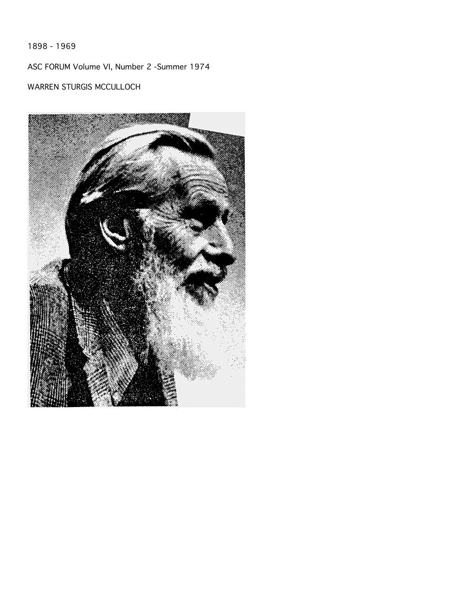

“Though I did not know it then, I had become a cyberneticist.”
ASC Forum · Vol. VI · No. 2 · Summer 1974
Recollections of the Many Sources of Cybernetics
A memoir of the teachers, arguments, and accidents that made a science. McCulloch traces cybernetics back through Wiener and Pitts, Kant and Magnus, Peirce and Russell, Descartes and the pre-Socratics — and forward to the question he never stopped asking.
Read the plateThe thesis
Cybernetics was not founded by a committee. It was remembered into existence.
The memoir is a genealogy, not a history. McCulloch names the people from whom he learned the pieces: Rufus Jones, who told him the number question would keep him busy for life; Boltwood, who taught the pre-Socratics and the habit of not being afraid to think; Kant, Helmholtz, and Magnus, who made the synthetic a priori physiological; Dusser de Barenne, who made epistemology experimental; Peirce, Russell, and Whitehead, who supplied the logic; Descartes, who supplied the least event; Wiener and Pitts, who supplied the machine.
The result is a portrait of a science whose unity is a set of shared questions, not a single method. “Though I did not know it then, I had become a cyberneticist.”
The best line about teaching: “One almost always learns important things from the wrong professors.”
Laboratory 01 · the constellation
Click a star. Read what it gave him.
The lines are not citations; they are debts. Some are direct teachers, some are arguments encountered in books, some are collaborators. The centre is the question.
A genealogy of cybernetics
Each star is a source. The selected star is highlighted, with its role and a line from the memoir or the work it gave him.
Warren S. McCullochThe question, and the programme
Laboratory 02 · the years
One life, eighteen turns.
Drag the year. The nearest event appears below. The point is not chronology for its own sake, but how late the pieces arrived and how long the question had been waiting.
1898–1974
From Haverford to the ASC Forum. The dashed line is the published memoir; the solid line is the life.
nearest event1960 · Number
detailThe Korzybski lecture: number, psychon, probabilistic logic.
The voice
A life in sentences.
“Though I did not know it then, I had become a cyberneticist.”
“One almost always learns important things from the wrong professors.”
“They were not afraid to think.”
“Mechanism and Teleology held no contradiction.”
“Remember that students are animals with curiosity and a willingness to help.”
“What is a number, that a man may know it, and a man, that he may know a number?”
The paper itself
First page, 1974
click to enlarge

The end of the codex
“Friend, thee will be busy as long as thee lives.”
Rufus Jones was right. The question that began at Haverford in 1917 runs through every plate in this codex: what is a number, that a man may know it; what is a man, that he may know a number; what is a machine, that it may know; and what is a society, that its machines may learn an ethic.
The memoir closes the codex not with an answer but with a method: collect the sources, name the debts, keep the question open, and proceed serenely.
Return to the beginning: the 1943 calculus, where the question first became a wiring diagram.